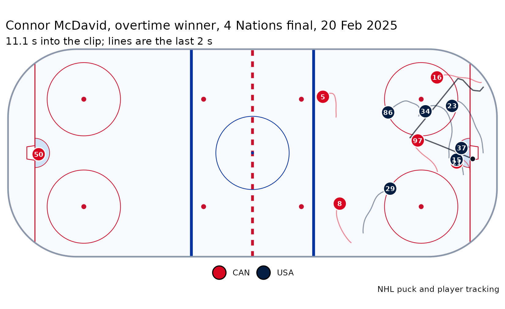
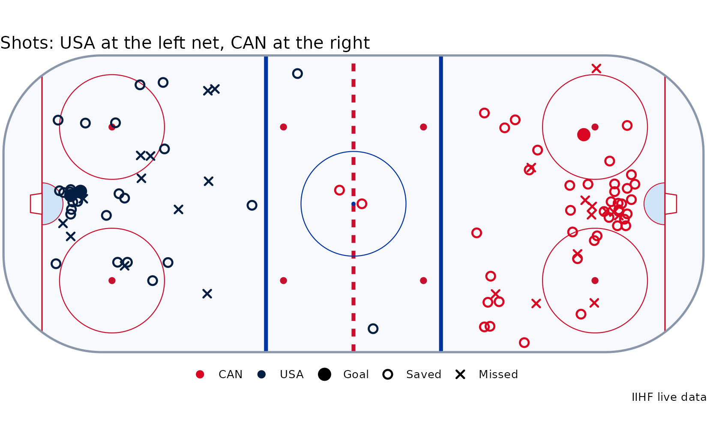

Beyond the NHL: international hockey and other eras
Source:vignettes/articles/beyond-the-nhl.Rmd
beyond-the-nhl.RmdThe NHL’s APIs reach past its own regular season and playoffs: the best-on-best tournaments its players have played in since 1976, the tracking of the 4 Nations Face-Off, and every season back to 1917-18. The IIHF’s live feed adds a shot map of every game it runs. This article goes through each.
Every best-on-best tournament
The NHL keeps the record of every tournament its players have played
in: five Canada Cups, three World Cups of Hockey, the Olympics from 1998
to 2014 and in 2026, and the 4 Nations Face-Off.
nhl_international_winners() is the game that decided
each:
winners <- nhl_international_winners()
winners[, c("tournament", "year", "winning_tricode", "winning_score", "losing_tricode", "losing_score", "overtime")]
#> # A tibble: 15 × 7
#> tournament year winning_tricode winning_score losing_tricode losing_score overtime
#> <chr> <dbl> <chr> <int> <chr> <int> <chr>
#> 1 Canada Cup 1976 CAN 5 TCH 4 OT
#> 2 Canada Cup 1981 URS 8 CAN 1 NA
#> 3 Canada Cup 1984 CAN 6 SWE 5 NA
#> 4 Canada Cup 1987 CAN 6 URS 5 NA
#> 5 Canada Cup 1991 CAN 4 USA 2 NA
#> 6 World Cup of Hockey 1996 USA 5 CAN 2 NA
#> 7 Olympics 1998 CZE 1 RUS 0 NA
#> 8 Olympics 2002 CAN 5 USA 2 NA
#> 9 World Cup of Hockey 2004 CAN 3 FIN 2 NA
#> 10 Olympics 2006 SWE 3 FIN 2 NA
#> 11 Olympics 2010 CAN 3 USA 2 OT
#> 12 Olympics 2014 CAN 3 SWE 0 NA
#> 13 World Cup of Hockey 2016 CAN 2 EUR 1 NA
#> 14 4 Nations Face-Off 2025 CAN 3 USA 2 OT
#> 15 Olympics 2026 USA 2 CAN 1 OTEach player’s and club’s numbers at each tournament are in
nhl_international(); here are the 2026 Olympics’ scoring
leaders:
oly <- nhl_international("skater", "olympics", 2026)
oly[, c("first_name", "last_name", "tri_code", "games_played", "goals", "assists", "points")]
#> # A tibble: 264 × 7
#> first_name last_name tri_code games_played goals assists points
#> <chr> <chr> <chr> <int> <int> <int> <int>
#> 1 Connor McDavid CAN 6 2 11 13
#> 2 Macklin Celebrini CAN 6 5 5 10
#> 3 Lucas Raymond SWE 5 1 8 9
#> 4 Joel Armia FIN 6 3 5 8
#> 5 Juraj Slafkovský SVK 6 4 4 8
#> 6 Martin Necas CZE 5 3 5 8
#> # ℹ 258 more rowsand the Olympic careers, with medals:
careers <- nhl_international_careers("skater", olympics = TRUE)
careers[, c("first_name", "last_name", "team_name", "tournaments_played", "games_played", "points", "gold_medals", "total_medals")]
#> # A tibble: 1,128 × 8
#> first_name last_name team_name tournaments_played games_played points gold_medals
#> <chr> <chr> <chr> <int> <int> <int> <int>
#> 1 Teemu Selanne Finland 5 30 32 0
#> 2 Marian Hossa Slovakia 4 19 28 0
#> 3 Daniel Alfredsson Sweden 5 26 27 1
#> 4 Saku Koivu Finland 3 20 23 0
#> 5 Jaromir Jagr Czechia 5 28 23 1
#> 6 Pavel Datsyuk Russia 4 23 20 0
#> # ℹ 1,122 more rows
#> # ℹ 1 more variable: total_medals <int>The 4 Nations final, from the tracking
The 4 Nations Face-Off was played on NHL ice with the NHL’s tracking, so its goals have the same frames as any NHL goal: every skater and the puck, ten times a second. Connor McDavid’s overtime winner in the final:
frames <- nhl_goal_tracking(2024200007, 1443)
plot_goal(frames, title = "Connor McDavid, overtime winner, 4 Nations final, 20 Feb 2025")
animate_goal() plays it back, with the clubs’ logos and
the tournament’s at centre ice:
four_nations <- paste0("https://assets.nhle.com/special_event_season/20242025/svg/",
"4n-2025-championship-extwm-en_light.svg")
animate_goal(frames, "mcdavid-4-nations.mp4", goal = nhl_goal_replay(2024200007, 1443),
logos = TRUE, centre_logo = four_nations)
The Olympic final, shot by shot
The Olympics are not on NHL tracking, but the IIHF’s live feed places every shot on the ice. The 2026 men’s final, won by Jack Hughes in overtime:
shots <- iihf_shots(1010000058)
table(shots$team, shots$result)
#>
#> blocked goal missed saved
#> CAN 24 1 12 41
#> USA 17 2 12 26
shots[shots$result == "goal", c("period", "time", "team", "player_name", "distance")]
#> # A tibble: 3 × 5
#> period time team player_name distance
#> <chr> <chr> <chr> <chr> <dbl>
#> 1 1 06:00 USA Matt Boldy 8.54
#> 2 2 38:16 CAN Cale Makar 30.5
#> 3 OT 61:41 USA Jack Hughes 11.6
plot_shots(shots)
The same functions cover the IIHF’s World Championships, World
Juniors and women’s and under-18 tournaments from 2019 on:
iihf_schedule() lists a tournament’s games.
Other eras
A 1950s season and a 2020s one were played in different leagues:
fewer games, fewer skaters dressed, and more or fewer goals a night.
nhl_era_adjust() rescales each season to one scoring
environment (by default the last ten completed seasons over 82 games),
so the best seasons of four eras read on one scale:
best_season <- function(id) {
p <- nhl_player(id)
s <- p$season_totals
s <- s[s$league_abbrev == "NHL" & s$game_type_id == 2, ]
out <- s[which.max(s$points), c("season", "goals", "assists", "points")]
out$player <- paste(p$bio$first_name, p$bio$last_name)
out
}
best <- do.call(rbind, lapply(c(8448000, 8447400, 8448782, 8478402), best_season))
nhl_era_adjust(best)[, c("player", "season", "goals", "assists", "points", "adj_goals", "adj_assists", "adj_points")]
#> # A tibble: 4 × 8
#> player season goals assists points adj_goals adj_assists adj_points
#> <chr> <int> <int> <int> <int> <dbl> <dbl> <dbl>
#> 1 Gordie Howe 19681969 44 59 103 41.1 56.5 97.6
#> 2 Wayne Gretzky 19851986 52 163 215 40.1 129. 169.
#> 3 Mario Lemieux 19881989 85 114 199 69.6 94.8 164.
#> 4 Connor McDavid 20222023 64 89 153 60.9 84.7 146.nhl_league_env() is the table behind it: every season
since 1917-18, with its games, goals and assists a game and roster size.
nhl_stat_eras() says what the NHL kept in each era, from
goals and assists in 1917-18 to the tracking of today.